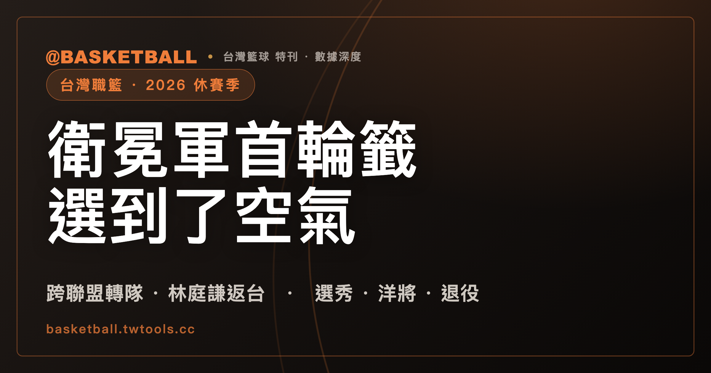

領航猿選了吳志鍇，他卻加盟戰神：2026 台灣職籃休賽季異動總表
截至 2026 年 8 月 10 日，台灣職籃最反常的一筆異動，是吳志鍇先後被 PLG 領航猿與 TPBL 戰神選中，最後只與戰神簽約。林庭謙結束 6 個 CBA 賽季返台，陳力生從 PLG 轉投 TPBL 攻城獅，林秉聖則從 TPBL 戰神轉向 PLG 洋基工程。兩個聯盟的球員流向，在同一個夏天交錯。

台灣職籃 · 2026 休賽季｜雙聯盟選秀 · 跨聯盟轉隊｜旅外回流 · 洋將重組
桃園璞園領航猿在 PLG 選秀會上，用首輪第 4 順位選了吳志鍇。
16 天後，臺北台新戰神又在 TPBL 選秀會上，用榜眼籤選了同一個人。
再過 18 天，吳志鍇披上戰神的 13 號球衣。PLG 衛冕軍領航猿的首輪籤，最後沒有換到一名報到的球員。聯合新聞網的標題寫得直接：領航猿選到「空氣」。
兩個聯盟各自舉辦選秀，球員異動卻會跨過聯盟邊界。台灣職籃為什麼同時有 TPBL 與 PLG，可先讀〈台灣職籃為什麼有兩個聯盟？〉。這個夏天的名單，正好把並立的影響攤在桌上。
異動名單同時跨過 TPBL、PLG、SBL 與 CBA
以下整理截至 2026 年 8 月 10 日已宣布或已有明確狀態的異動。新東家欄標出聯盟。林秉聖的買斷協議已宣布，但洋基工程仍要另行公告正式加盟資訊。雲豹第 4 名洋將已確定到位，姓名尚未公布，因此不列入具名名單。
| 球員 | 異動性質 | 原屬 | 新東家 |
|---|---|---|---|
| 林庭謙 | 加盟 | CBA 天津榮鋼 | 臺北台新戰神（TPBL） |
| 米勒（Miller） | 留用 | 桃園台啤永豐雲豹（TPBL） | 桃園台啤永豐雲豹（TPBL） |
| 莫騰（Brock Motum） | 加盟 | B.LEAGUE 滋賀湖泊 | 桃園台啤永豐雲豹（TPBL） |
| 溫布許（Thomas Wimbush） | 加盟 | 海外聯賽 | 桃園台啤永豐雲豹（TPBL） |
| 周儀翔 | 加盟 | SBL 基隆黑鳶 | 新北國王（TPBL） |
| 陳力生 | 加盟 | 桃園璞園領航猿（PLG） | 新竹御嵿攻城獅（TPBL） |
| 陳昱瑞 | 回歸 | 洋基工程（PLG） | 桃園璞園領航猿（PLG） |
| 吳志鍇 | 選秀、加盟 | 政治大學 | 臺北台新戰神（TPBL） |
| 郭嘉安 | 選秀、加盟 | 國立體育大學 | SBL 台啤 |
| 賀丹（Adam Hinton） | 選秀 | 康乃爾大學 | 高雄全家海神（TPBL） |
| 王鼎鈞 | 選秀 | 健行科技大學 | 洋基工程（PLG） |
| 李盛新 | 選秀 | 輔仁大學 | 台鋼獵鷹（PLG） |
| 莫森 | 選秀 | 輔仁大學 | 臺北富邦勇士（PLG） |
| 林秉聖 | 買斷 | 臺北台新戰神（TPBL） | 洋基工程（PLG，正式加盟資訊待公告） |
| 宋昕澔 | 選秀 | 政治大學 | CBA 廣州龍獅 |
| 林志傑 | 退役 | 臺北富邦勇士（PLG） | — |
這張表有兩種方向。林庭謙從 CBA 回台，宋昕澔則往 CBA 走。陳力生從 PLG 轉往 TPBL，林秉聖的方向完全相反。吳志鍇更特別。他沒有先成為領航猿球員再轉隊，而是在兩邊都被選中後，只與戰神簽約。
衛冕軍用首輪籤選了一個不會報到的人
PLG 在 2026 年 6 月 30 日舉行選秀。4 支球隊各選 1 人。洋基工程用狀元籤選進健行科大後衛王鼎鈞。王鼎鈞上季場均 14.8 分，三分球命中率 37.2%。台鋼獵鷹選進輔大前鋒李盛新。臺北富邦勇士選進輔大外籍生長人莫森。剛完成二連霸的桃園璞園領航猿，則用第 4 順位選進政大前鋒吳志鍇。
PLG 選秀僅進行 1 輪。4 隊在第 2 輪全數放棄。獲選 4 人，創下聯盟史上新低。
TPBL 的選秀在 7 月 16 日登場，共有 28 人報名。首輪前 3 順位依序是高雄全家海神選進賀丹、臺北台新戰神選進吳志鍇、新北中信特攻選進郭嘉安。新竹御嵿攻城獅選進傅友，新北國王選進潘偉傑。桃園台啤永豐雲豹與福爾摩沙夢想家在首輪放棄。第 2 輪仍有球員獲選，第 3 輪沒有人獲選。
賀丹 23 歲，身高 194 公分，畢業於美國康乃爾大學。吳志鍇身高 196 公分，大四三分球命中率 42%。8 月 3 日，戰神正式與吳志鍇簽約。兩場選秀的選擇，在這一天只剩一份合約。
兩聯盟的選秀與球員身分類別並不相同。細節可對照〈TPBL 與 PLG 規則比較〉。吳志鍇同時出現在兩張選秀結果裡，最後只與戰神完成簽約。
陳力生與林秉聖朝相反方向跨過聯盟邊界
7 月 14 日，新竹御嵿攻城獅宣布陳力生加盟。據《壹蘋新聞網》報導，23 歲、175 公分的陳力生將披 3 號球衣。他從南山高中、國立體育大學一路走到職業賽場，前兩季都效力 PLG 桃園璞園領航猿。上季也曾在 2025 年 BCL 亞洲籃球冠軍聯賽出賽。
陳力生的新東家是 TPBL 新竹御嵿攻城獅，不是 PLG 球隊。另一支名稱常與新竹連在一起的球隊，是 PLG 新軍洋基工程。兩隊都與新竹有關，卻分屬不同聯盟。
8 月 5 日，跨聯盟的方向反了過來。TPBL 臺北台新戰神與 PLG 洋基工程達成協議，由洋基工程買斷林秉聖的合約。林秉聖曾在 CBA 浙江廣廈效力 2 年，2025-26 賽季後依約返台，並主動求去。截至 8 月 10 日，洋基工程尚未公布正式加盟資訊。
「轉隊」在這個夏天不只代表換球團。陳力生從 PLG 球隊走進 TPBL，林秉聖則從 TPBL 球隊轉向 PLG。兩筆異動都跨過了聯盟邊界。
林庭謙結束 6 個 CBA 賽季，戰神只公布複數年約
8 月 6 日，臺北台新戰神宣布與林庭謙簽下複數年合約。8 月 13 日將舉辦加盟記者會。球團沒有公布合約金額，也沒有公開確切年限。
林庭謙 26 歲。他結束 CBA 天津榮鋼 6 個賽季的旅外生涯返台。上季場均 19.6 分、5.2 助攻、1.5 抄截，並入選 CBA 最佳陣容第二隊。這不是一名等待養成的新秀，而是一名帶著 6 季 CBA 經驗回到台灣的後衛。
據《自由時報》報導，戰神在 8 月 7 日於台北車站、中山、公館、忠孝復興、市政府、國父紀念館等捷運站周邊，發出 3,000 份「林庭謙加盟特報」。總經理林祐廷說，林庭謙將「在台北展開生涯新篇章」。戰神上季主場是台北和平籃球館。2026-27 賽季主場尚未由球團公告。
宋昕澔與林庭謙，讓旅外流動在同一個夏天出現反方向。7 月 28 日上午，CBA 選秀大會在北京首鋼園電競中心舉行。廣州龍獅透過與四川男籃交易取得狀元籤，再以首輪第 1 順位指名政大後衛宋昕澔。宋昕澔成為繼 2017 年陳盈駿之後，史上第 2 位台灣籍 CBA 選秀狀元。本屆共有 5 名台灣球員符合資格。據民報與 NOWnews 報導，依 CBA 選秀規定，狀元保障年薪至少 50 萬人民幣，約新台幣 239 萬。這是制度保障底薪，不是宋昕澔合約的實際金額。
6,000 萬只是媒體預估，不是林庭謙的官方年薪
林庭謙的官方資訊只有「複數年合約」。金額未公開。
《自由時報》把林庭謙年薪預估為新台幣 6,000 萬元，並稱可能是台灣職籃最高薪。這是媒體預估，不是戰神公告的數字。
同一篇報導再把 6,000 萬元與 3 個市場放在一起比較。CBA 本土頂薪是稅前 600 萬人民幣，報導換算約新台幣 2,870 萬元。KBL 的比較數字約 8 億韓元，報導換算約新台幣 1,821 萬元。B.LEAGUE 的個案最高薪是渡邊雄太 2 億日圓，報導換算約新台幣 4,077 萬元。
這組比較不能直接當成 4 個對齊的官方薪資數字。林庭謙端是媒體預估。CBA 端是制度頂薪。KBL 與 B.LEAGUE 端又不是同一種基準。《自由時報》把台灣兩聯盟並立、沒有薪資上限所形成的「軍備競賽」，列為推高價格的原因。這也是媒體的比較與歸因，不是聯盟或球團說法。
NBA 的休賽季也一樣，談定、正式完成與媒體報導是 3 種不同狀態，〈2026 NBA 休賽季異動總表〉就把已完成與待確認分開列。
雲豹公布 2 名新洋將，第 4 人仍沒有姓名
桃園台啤永豐雲豹留用米勒，另簽下莫騰與溫布許。據《自由時報》8 月 10 日兩篇報導，兩名新洋將都是第一次來台灣打球。
莫騰是澳洲籍，身高 208 公分，左撇子。他曾是 2016 年里約奧運澳洲國手。2024-25 賽季效力日本 B.LEAGUE 滋賀湖泊時，莫騰以場均 21.4 分、8 籃板成為球隊得分王。
溫布許是美國籍，身高 201 公分，同樣是左撇子。他曾在德國、法國、俄羅斯、黎巴嫩聯賽打球，也效力過日本 B1 川崎與滋賀。上季出賽 58 場，場均 15.6 分、5.1 籃板。
雲豹營運長顏行書表示，第 4 名洋將「已確定到位、近期公布」。截至 8 月 10 日，姓名還沒有公布。球隊也將補進 1 名本土球員，姓名同樣尚未公布。
克羅馬、麥卡洛與迪亞洛已在上季結束後離隊。留用 1 人、新簽 2 人、另有 1 人待公布，雲豹的洋將重組輪廓已經出現，但名單還差最後一個名字。
領航猿找回陳昱瑞，準備挑戰 PLG 三連霸
8 月 7 日，桃園璞園領航猿宣布陳昱瑞回歸。球團稱陳昱瑞是「冠軍拼圖的一分子」，並把下季目標指向三連霸。
陳昱瑞在 2025 年 9 月被領航猿交易到洋基工程。上季替洋基工程出賽 21 場，場均 6.4 分、2.3 籃板、2.2 助攻。據《自由時報》報導，洋基工程買斷林秉聖後重整陣容，與陳昱瑞分道揚鑣。陳昱瑞因而回到領航猿。
陳昱瑞上季效力的洋基工程，就是 8 月 5 日買斷林秉聖的那支 PLG 新軍，與 TPBL 的新竹御嵿攻城獅分屬兩個聯盟。
林志傑最後一戰輸了 26 分，富邦開始補退役後的空缺
林志傑在 2025 年 10 月 3 日宣布，會在 2025-26 賽季結束後退休。當時 43 歲的他，也預告 2026 年 4 月 11 日、12 日在台北小巨蛋舉行引退賽。
生涯最後一場比賽出現在 6 月 18 日。PLG 總冠軍賽打到第 7 戰，臺北富邦勇士以 81：107 不敵桃園璞園領航猿。領航猿完成二連霸。林志傑賽後說，最大遺憾是「沒有拿到冠軍，而不是退休這件事」，並用「堅持」總結生涯。林志傑目前已正式退役。
富邦的 2026 休賽季，因此是林志傑退役後的第一個夏天。據《自由時報》報導，總經理葉宗穎在 8 月 10 日表示，球團會全力爭取旅外球員。外界問到陳盈駿與劉錚的傳聞，他只回應傳聞很多，目前不方便多做回應。兩人的去向沒有因此獲得確認。
富邦已選進外籍生莫森，簽下射手李啓瑋，並與洪楷傑、外籍生莫巴耶續約。另有 3 名洋將已到位，將由球團陸續公布。這些是已知的補強。陳盈駿與劉錚仍只是被問到的名字。
郭嘉安放棄 TPBL，改與 SBL 台啤簽約
新北中信特攻在 TPBL 選秀用探花籤選進郭嘉安。郭嘉安最後沒有進入 TPBL。8 月 8 日，他與 SBL 台啤簽約。郭嘉安在 SBL 選秀同樣是探花順位。
據《自由時報》報導，郭嘉安隨後在長耀盃未來聯盟公益邀請賽對虎尾科大出賽近 23 分鐘。他 20 投 13 中，拿下 33 分、9 籃板，正負值是 +27。台啤以 79：56 取勝。郭嘉安把目標放在新人王，也希望幫助台啤重返總冠軍賽。
郭嘉安的路線與吳志鍇不同，結果卻同樣提醒一件事：被職籃球隊選中，不等於最後一定會向該隊報到。選秀結果是起點。簽約才決定下一站。
夢想家與領航猿都在第 7 戰拿下冠軍
2025-26 賽季的兩個冠軍，都要打到第 7 戰才產生。
TPBL 總冠軍賽在 6 月 6 日結束。福爾摩沙夢想家以 90：78 擊敗新北國王。夢想家曾在系列賽以 1：3 落後，接著連贏 3 場，以 4：3 拿下隊史首冠。班提爾在第 7 戰得到 29 分、13 籃板，獲選總冠軍賽最有價值球員。海碩集團董事長韓國福宣布冠軍獎金 3,500 萬元。
PLG 總冠軍賽在 6 月 18 日結束。桃園璞園領航猿以 107：81 擊敗臺北富邦勇士，同樣以 4：3 贏下系列賽。領航猿完成二連霸。富邦連續 2 年在第 7 戰落敗。
這兩個冠軍也解釋了休賽季的兩條主線：領航猿找回陳昱瑞準備挑戰三連霸，富邦則在林志傑退役後補人。
兩個聯盟都還沒有公布 2026-27 開季日
截至 2026 年 8 月 10 日，TPBL 與 PLG 都還沒有公布 2026-27 賽季開季日期。
TPBL 官網首頁與賽程頁沒有 2026-27 資料。台新戰神官網的賽季選單也只到 2025-26。PLG 同樣沒有公布 2026-27 開季日。新賽季的實際日期，仍要等兩聯盟公告。
常見問題
吳志鍇最後會替哪一隊打球？
吳志鍇在 2026 年先後被 PLG 桃園璞園領航猿與 TPBL 臺北台新戰神選中，最後於 8 月 3 日正式與台新戰神簽約，將披 13 號球衣。領航猿雖然用 PLG 首輪第 4 順位選中吳志鍇，但沒有與他完成簽約。
林庭謙加盟戰神的年薪是 6,000 萬元嗎？
不是官方已公布的數字。臺北台新戰神只宣布與林庭謙簽下複數年合約，沒有公開金額與確切年限。新台幣 6,000 萬元是《自由時報》的媒體預估，不能當成球團公告的年薪。
陳力生加盟的是 TPBL 還是 PLG 球隊？
陳力生加盟的是 TPBL 新竹御嵿攻城獅。他前兩個職業賽季效力 PLG 桃園璞園領航猿，因此這是一筆從 PLG 跨到 TPBL 的異動。PLG 的新竹新軍是洋基工程，不能與攻城獅混為一隊。
桃園台啤永豐雲豹的 4 名洋將都公布了嗎？
還沒有。截至 2026 年 8 月 10 日，雲豹已留用米勒，並公布新簽莫騰與溫布許。營運長顏行書表示第 4 名洋將已確定到位、近期公布，但球員姓名尚未公開。
TPBL 與 PLG 的 2026-27 賽季何時開打？
截至 2026 年 8 月 10 日，TPBL 與 PLG 都尚未公告 2026-27 賽季開季日期。實際開打時間仍要等兩聯盟各自公布。